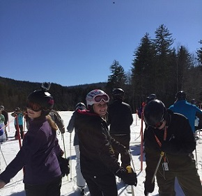
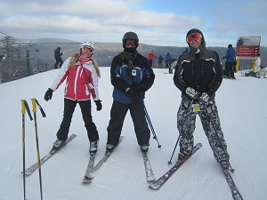
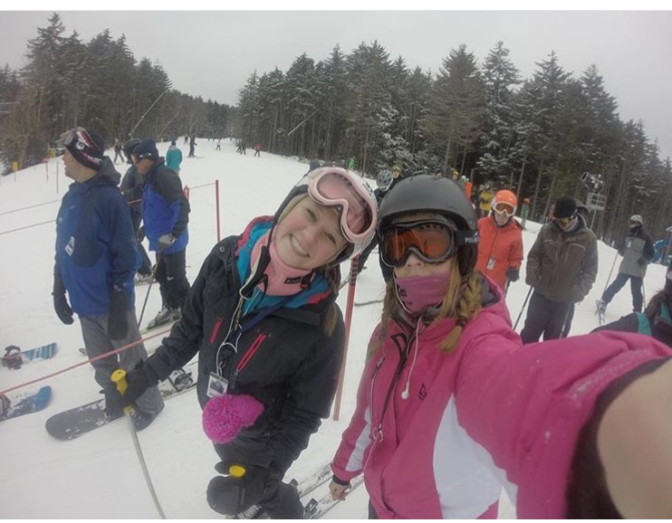
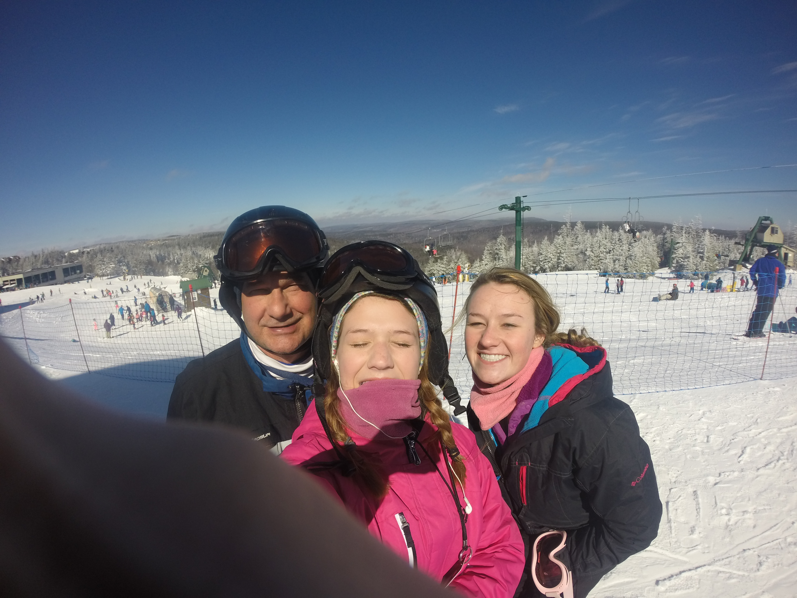

I got on my first pair of skis at three years old, and I have loved it ever since. My mom grew up as a skier and taught me everything i know. My dad, on the other hand, learned through years of my mom forcing him to go on ski trips with her every winter. Through 12 years of skiing I have learned many things, including tricks and how to control my skis on thin layers of ice. I love to be on the slopes all day, with breaks for hot chocolate of course. Since Skiing is a seasonal thing, unfortunately, there is only limited time I can be on my skis. My family has season passes to Snowshoe in West Virginia, which is my all time favorite place to ski.
I have been all over the United States to ski. I have been to Colorado to Breckenridge, Steamboat, and Vail. I have been to Sundance in Utah, and I have been in West Virginia to ski at Snowshoe mountain. I have also been to Sugar and Boone mountain in North Carolina. I grew up skiing in West Virginia, where I got on my first pair of skis. Colorado is one of my favorite places to travel to go skiing, because there is something about skiing out West that I can’t explain. My family tries to travel out West every other year or so. I love skiing in Colorado because there is a lot more difficult terrain, which is what i strive for. I am always up for a challenge on my skis. I rode down my first black diamond, slope, when i was 11 years old. I was terrified the whole time skiing down the slope because it was a huge deal to me, and it was steep and very icy. Luckily, I did not fall. Now i ski down the black diamonds like no one’s business.
I love skiing for the competition, and the rush of going down the slopes, but i also love it for quality family time. Everyone in my family can ski, and/ or snowboard. My father is great at skiing, and my brother is great at snowboarding, but my mom, sister and I can both ski and snowboard. I first learned how to snowboard two years ago. It took me a while to pick up, but now it’s great because i can choose whether i want to snowboard or ski each day. My family enjoys skiing, and it makes for a great family trip.
After a long day of speeding down slopes, and slipping on thin ice, I love to go in a lodge for hot chocolate, some nachos, and sit by the fire to unfreeze.In the end, skiing is and will be my favorite thing to do. I will continue to ski as an adult, and teach my kids the wonders of skiing and snowboarding. I will pass down the traditions of Snowshoe Mountain,and continue to have great family trips.
Rachel B.